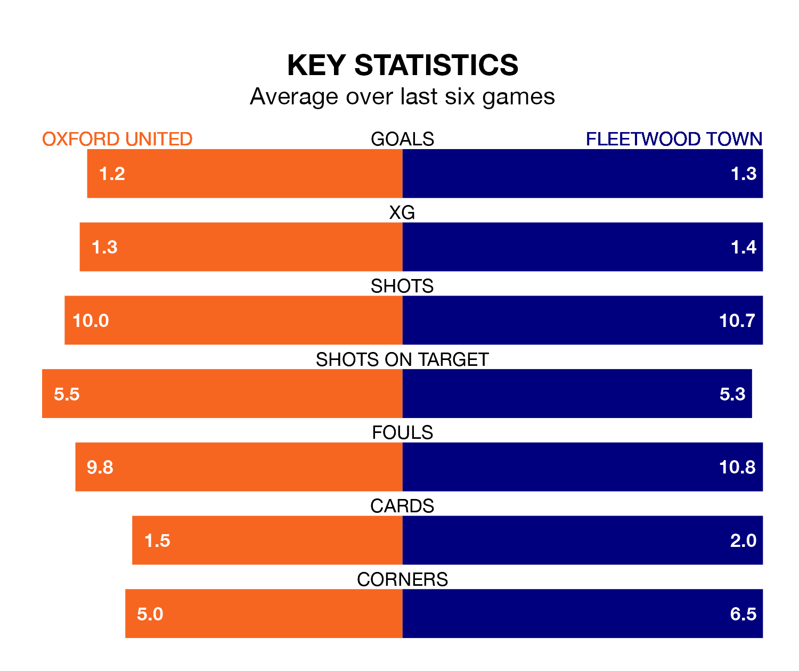

Oxford United are heavy favourites to keep all three points at home in Monday's kick-off against Fleetwood Town.
The Us, who sit seventh in EFL League One with 40 games played, are priced at 1.6 to seal victory at the Kassam Stadium.
Sitting 16 places and 30 points behind them in the table, Fleetwood are 5.0 to win with *Betting Company*, while the draw is at 3.8.
With 63 goals in 40 games so far this season, Oxford are scoring more than average in the league with 1.6 goals per game. And they are conceding at an average rate, letting in 53 goals at a rate of 1.3 per game.
Fleetwood, meanwhile, are below average scorers, with 1.0 goal per game, compared to a league average of 1.3. They have conceded 1.6 goals per game.
In the last 10 years, Oxford and Fleetwood have played each other on 14 occasions. Oxford won five of them, Fleetwood seven, and they drew twice.
On average, the Us scored 1.2 goals and the Cod Army 1.5 in those matches.
Their last meeting was on September 16, when Oxford won 3-0 away.
United are in mixed form in EFL League One, with two wins and a draw from their last six games.
With a win and four draws over that period, Town's form is similar – they have both taken seven points from 18.
Oxford's last match was on Friday, a 1-1 draw against Shrewsbury Town, with Billy Bodin getting the goal for the Us.
Fleetwood lost 2-1 against Cheltenham Town last time out, also on Friday, with Ryan Graydon on the scoresheet.
Monday's match will be refereed by Scott Jackson, who has taken charge of seven EFL League One games so far this season, issuing no red cards and booking 23 players. He has not awarded any penalties.
He is yet to oversee a match featuring either Oxford or Fleetwood this season.
Updated: 10:31 (UTC), 31/03/24